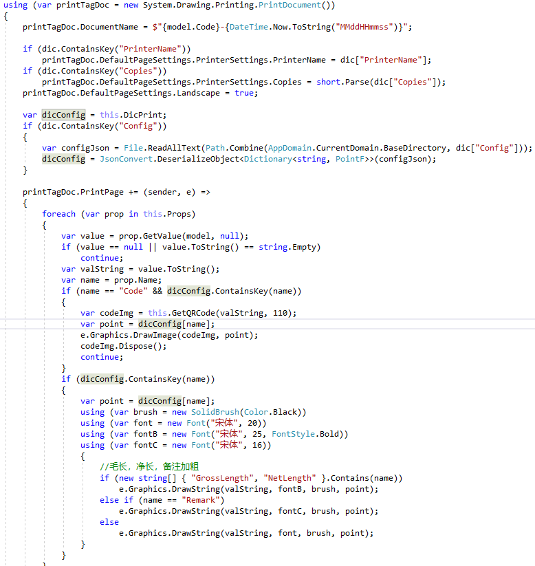
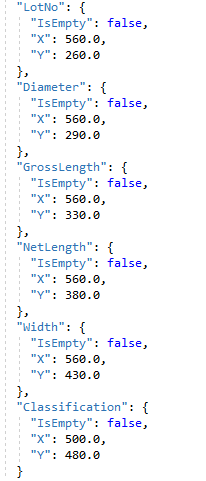
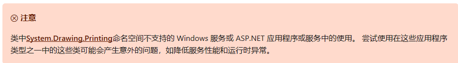
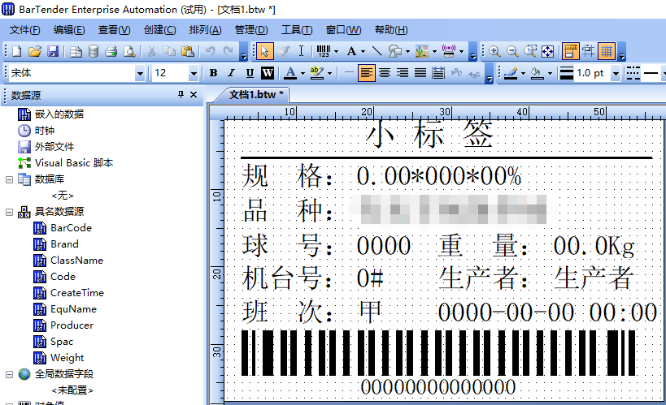
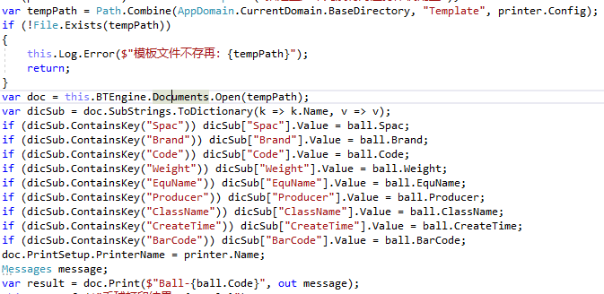
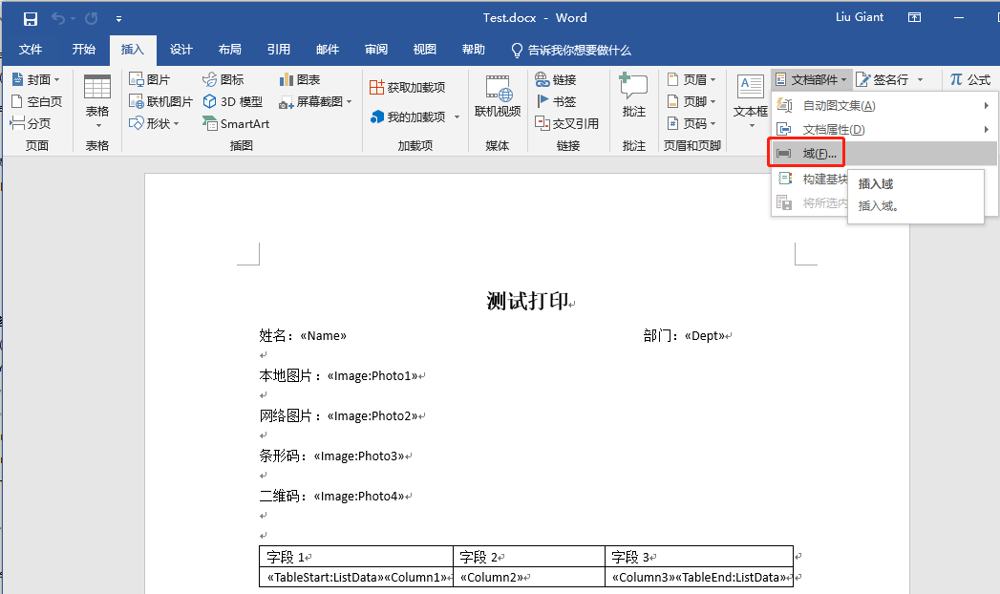
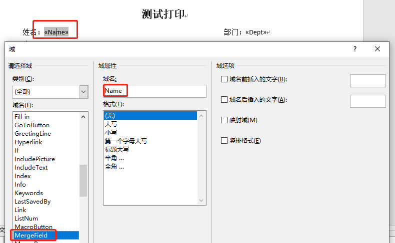
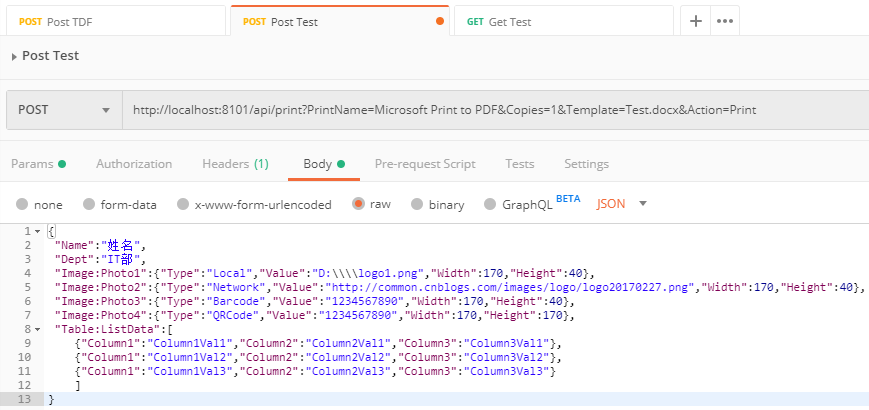
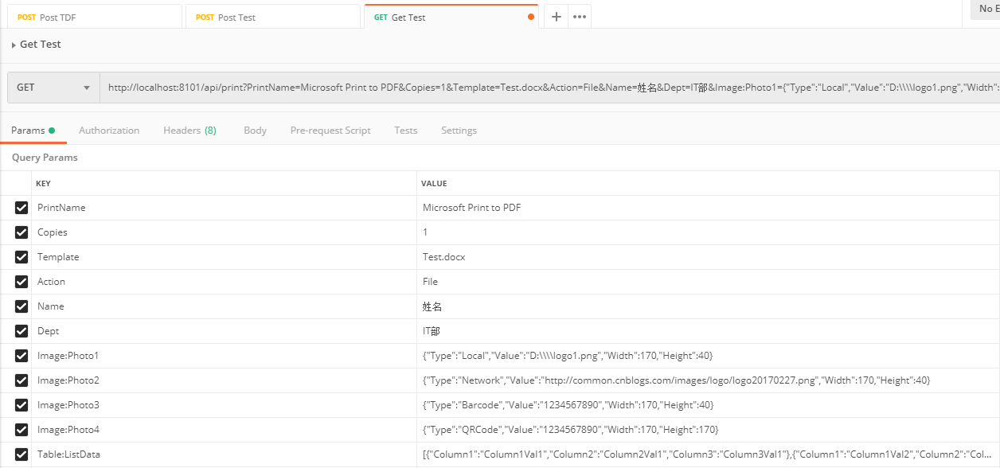

原文连接:https://www.cnblogs.com/liuju150/p/Service_Print_Template_Solution.html
最近做了几个项目，都有在产品贴标的需求
基本就是有个证卡类打印机，然后把产品的信息打印在标签上。
然后通过机器人把标签贴到产品上面
标签信息包括文本，二维码，条形码之类的，要根据对应的数据生成二维码，条形码。
打印标签的需求接到手后，开始了我的填坑之旅。
打印3.0源代码：https://github.com/zeqp/ZEQP.Print
打印1.0
第一个项目开始，因为原来没有研究过打印，所以在Bing上查了一下.Net打印机关的资料
发现基本上都是基于.net的
System.Drawing.Printing.PrintDocument
这个类来做自定义打印
大家都用这个做打印，我想按理也没有问题。
所以开始了我的代码。
PrintDocument去做打印，无非就是设置好打印机名称，
DefaultPageSettings.PrinterSettings.PrinterName
打印份数
DefaultPageSettings.PrinterSettings.Copies
纸张方向
DefaultPageSettings.Landscape
然后打印的具体的信息就是事件PrintPage写进去
然后调用
Graphics.DrawString,Graphics.DrawImage来写入具体的文本与图片
Graphics.Draw的时候要指定字体，颜色，位置等数据
我把这些做成配置数据。
然后1.0版本就成了。

下图为位置的配置文件

代码一写完，用VS调试的时候。跑得飞起。、
所有的字体，要打印数据的位置也通过配置文件可以动态的调整。感觉还算完美。
但是现实很骨感，马上就拍拍打脸了
PrintDocument类只能以WinForm的方式运行，不能以服务的方式运行。
具体可以参考：https://docs.microsoft.com/zh-cn/dotnet/api/system.drawing.printing?redirectedfrom=MSDN&view=netframework-4.8

幸好客户方面没有什么要求，而且生产的时候会有一台专门的上位机可以做这个事，所以做了一个无界面的WinForm。在电脑启动的时候运行
从而解决了不能以服务的方式运行的问题。
打印2.0
做完打印1.0后，又接到了一个项目。又是有打印相关的功能，自然又分配到我这里来了。
但是对于上一个版本的打印。不能做为服务运行，做为自己写的一个程序，居然有这么大的瑕疵。总感觉心里不爽
想去解决这个问题，但是在Bing上找到.Net的所有打印都是这样做的。也找不到什么更好的方法。
只到问了很多相关的相关人士。最后给了我一个第三方的商业解决方案BarTender
相关参考：https://www.bartendersoftware.com/
这个有自己的模板编辑器，

有自己的SDK，有编辑器，功能也非学强大。不愧是商业打印解决方案。
根据他的SDK，同时安装了相关程序，写下几句打印代码。一个基于Win服务的打印出来了

于是。打印2.0出来了。
打印3.0
但是对于一个基于第三方的商业打印方案，所有功能都是很强大。实现也简单。
就是对于一般公司的小项目。挣的钱还不够买这个商业套件的License
而且对于一个只会使用别人家的SDK的程序。不是一个有灵魂的程序。
因为你都不知道人家背后是怎么实现的。原理是什么都不知道。
对于我，虽然能把这个项目用BarTender完成。但是总是对这个打印方案不是很满意。
因为我只在这个上面加了一层壳。不知道后面做了什么。
所以我一直想自己开发一个可以基于Win服务运行的打印程序。最好也要有自己的模板编辑器。
只到有一天。无意找到一篇文章
https://docs.aspose.com/display/wordsnet/Print+a+Document
他这里也解释了有关基于服务的打印有关的问题不能解决。
并且他们已经找到了对应的解决方案。基于他的解决方案。写了对应一个打印帮助类。
这个是基于Windows的XPS文档API打印。
XPS是在Win 7后就是windows支持的打印文档类型 类比PDF
基本 XpsPrint API 的相关说明
同时基本他的XPS打印帮助类。我做了测试。可以完美的在Windows服务里面运行关打印。
5.png)
6.png)
1 namespace ZEQP.Print.Framework
2 {
3 /// <summary>
4 /// A utility class that converts a document to XPS using Aspose.Words and then sends to the XpsPrint API.
5 /// </summary>
6 public class XpsPrintHelper
7 {
8 /// <summary>
9 /// No ctor.
10 /// </summary>
11 private XpsPrintHelper()
12 {
13 }
14
15 // ExStart:XpsPrint_PrintDocument
16 // ExSummary:Convert an Aspose.Words document into an XPS stream and print.
17 /// <summary>
18 /// Sends an Aspose.Words document to a printer using the XpsPrint API.
19 /// </summary>
20 /// <param name="document"></param>
21 /// <param name="printerName"></param>
22 /// <param name="jobName">Job name. Can be null.</param>
23 /// <param name="isWait">True to wait for the job to complete. False to return immediately after submitting the job.</param>
24 /// <exception cref="Exception">Thrown if any error occurs.</exception>
25 public static void Print(string xpsFile, string printerName, string jobName, bool isWait)
26 {
27 Console.WriteLine("Print");
28 if (!File.Exists(xpsFile))
29 throw new ArgumentNullException("xpsFile");
30 using (var stream = File.OpenRead(xpsFile))
31 {
32 Print(stream, printerName, jobName, isWait);
33 }
34 //// Use Aspose.Words to convert the document to XPS and store in a memory stream.
35 //File.OpenRead
36 //MemoryStream stream = new MemoryStream();
37
38 //stream.Position = 0;
39 //Console.WriteLine("Saved as Xps");
40 //Print(stream, printerName, jobName, isWait);
41 Console.WriteLine("After Print");
42 }
43 // ExEnd:XpsPrint_PrintDocument
44 // ExStart:XpsPrint_PrintStream
45 // ExSummary:Prints an XPS document using the XpsPrint API.
46 /// <summary>
47 /// Sends a stream that contains a document in the XPS format to a printer using the XpsPrint API.
48 /// Has no dependency on Aspose.Words, can be used in any project.
49 /// </summary>
50 /// <param name="stream"></param>
51 /// <param name="printerName"></param>
52 /// <param name="jobName">Job name. Can be null.</param>
53 /// <param name="isWait">True to wait for the job to complete. False to return immediately after submitting the job.</param>
54 /// <exception cref="Exception">Thrown if any error occurs.</exception>
55 public static void Print(Stream stream, string printerName, string jobName, bool isWait)
56 {
57 if (stream == null)
58 throw new ArgumentNullException("stream");
59 if (printerName == null)
60 throw new ArgumentNullException("printerName");
61
62 // Create an event that we will wait on until the job is complete.
63 IntPtr completionEvent = CreateEvent(IntPtr.Zero, true, false, null);
64 if (completionEvent == IntPtr.Zero)
65 throw new Win32Exception();
66
67 // try
68 // {
69 IXpsPrintJob job;
70 IXpsPrintJobStream jobStream;
71 Console.WriteLine("StartJob");
72 StartJob(printerName, jobName, completionEvent, out job, out jobStream);
73 Console.WriteLine("Done StartJob");
74 Console.WriteLine("Start CopyJob");
75 CopyJob(stream, job, jobStream);
76 Console.WriteLine("End CopyJob");
77
78 Console.WriteLine("Start Wait");
79 if (isWait)
80 {
81 WaitForJob(completionEvent);
82 CheckJobStatus(job);
83 }
84 Console.WriteLine("End Wait");
85 /* }
86 finally
87 {
88 if (completionEvent != IntPtr.Zero)
89 CloseHandle(completionEvent);
90 }
91 */
92 if (completionEvent != IntPtr.Zero)
93 CloseHandle(completionEvent);
94 Console.WriteLine("Close Handle");
95 }
96 // ExEnd:XpsPrint_PrintStream
97
98 private static void StartJob(string printerName, string jobName, IntPtr completionEvent, out IXpsPrintJob job, out IXpsPrintJobStream jobStream)
99 {
100 int result = StartXpsPrintJob(printerName, jobName, null, IntPtr.Zero, completionEvent,
101 null, 0, out job, out jobStream, IntPtr.Zero);
102 if (result != 0)
103 throw new Win32Exception(result);
104 }
105
106 private static void CopyJob(Stream stream, IXpsPrintJob job, IXpsPrintJobStream jobStream)
107 {
108
109 // try
110 // {
111 byte[] buff = new byte[4096];
112 while (true)
113 {
114 uint read = (uint)stream.Read(buff, 0, buff.Length);
115 if (read == 0)
116 break;
117
118 uint written;
119 jobStream.Write(buff, read, out written);
120
121 if (read != written)
122 throw new Exception("Failed to copy data to the print job stream.");
123 }
124
125 // Indicate that the entire document has been copied.
126 jobStream.Close();
127 // }
128 // catch (Exception)
129 // {
130 // // Cancel the job if we had any trouble submitting it.
131 // job.Cancel();
132 // throw;
133 // }
134 }
135
136 private static void WaitForJob(IntPtr completionEvent)
137 {
138 const int INFINITE = -1;
139 switch (WaitForSingleObject(completionEvent, INFINITE))
140 {
141 case WAIT_RESULT.WAIT_OBJECT_0:
142 // Expected result, do nothing.
143 break;
144 case WAIT_RESULT.WAIT_FAILED:
145 throw new Win32Exception();
146 default:
147 throw new Exception("Unexpected result when waiting for the print job.");
148 }
149 }
150
151 private static void CheckJobStatus(IXpsPrintJob job)
152 {
153 XPS_JOB_STATUS jobStatus;
154 job.GetJobStatus(out jobStatus);
155 switch (jobStatus.completion)
156 {
157 case XPS_JOB_COMPLETION.XPS_JOB_COMPLETED:
158 // Expected result, do nothing.
159 break;
160 case XPS_JOB_COMPLETION.XPS_JOB_FAILED:
161 throw new Win32Exception(jobStatus.jobStatus);
162 default:
163 throw new Exception("Unexpected print job status.");
164 }
165 }
166
167 [DllImport("XpsPrint.dll", EntryPoint = "StartXpsPrintJob")]
168 private static extern int StartXpsPrintJob(
169 [MarshalAs(UnmanagedType.LPWStr)] String printerName,
170 [MarshalAs(UnmanagedType.LPWStr)] String jobName,
171 [MarshalAs(UnmanagedType.LPWStr)] String outputFileName,
172 IntPtr progressEvent, // HANDLE
173 IntPtr completionEvent, // HANDLE
174 [MarshalAs(UnmanagedType.LPArray)] byte[] printablePagesOn,
175 UInt32 printablePagesOnCount,
176 out IXpsPrintJob xpsPrintJob,
177 out IXpsPrintJobStream documentStream,
178 IntPtr printTicketStream); // This is actually "out IXpsPrintJobStream", but we don't use it and just want to pass null, hence IntPtr.
179
180 [DllImport("Kernel32.dll", SetLastError = true)]
181 private static extern IntPtr CreateEvent(IntPtr lpEventAttributes, bool bManualReset, bool bInitialState, string lpName);
182
183 [DllImport("Kernel32.dll", SetLastError = true, ExactSpelling = true)]
184 private static extern WAIT_RESULT WaitForSingleObject(IntPtr handle, Int32 milliseconds);
185
186 [DllImport("Kernel32.dll", SetLastError = true)]
187 [return: MarshalAs(UnmanagedType.Bool)]
188 private static extern bool CloseHandle(IntPtr hObject);
189 }
190
191 /// <summary>
192 /// This interface definition is HACKED.
193 ///
194 /// It appears that the IID for IXpsPrintJobStream specified in XpsPrint.h as
195 /// MIDL_INTERFACE("7a77dc5f-45d6-4dff-9307-d8cb846347ca") is not correct and the RCW cannot return it.
196 /// But the returned object returns the parent ISequentialStream inteface successfully.
197 ///
198 /// So the hack is that we obtain the ISequentialStream interface but work with it as
199 /// with the IXpsPrintJobStream interface.
200 /// </summary>
201 [Guid("0C733A30-2A1C-11CE-ADE5-00AA0044773D")] // This is IID of ISequenatialSteam.
202 [InterfaceType(ComInterfaceType.InterfaceIsIUnknown)]
203 interface IXpsPrintJobStream
204 {
205 // ISequentualStream methods.
206 void Read([MarshalAs(UnmanagedType.LPArray)] byte[] pv, uint cb, out uint pcbRead);
207 void Write([MarshalAs(UnmanagedType.LPArray)] byte[] pv, uint cb, out uint pcbWritten);
208 // IXpsPrintJobStream methods.
209 void Close();
210 }
211
212 [Guid("5ab89b06-8194-425f-ab3b-d7a96e350161")]
213 [InterfaceType(ComInterfaceType.InterfaceIsIUnknown)]
214 interface IXpsPrintJob
215 {
216 void Cancel();
217 void GetJobStatus(out XPS_JOB_STATUS jobStatus);
218 }
219
220 [StructLayout(LayoutKind.Sequential)]
221 struct XPS_JOB_STATUS
222 {
223 public UInt32 jobId;
224 public Int32 currentDocument;
225 public Int32 currentPage;
226 public Int32 currentPageTotal;
227 public XPS_JOB_COMPLETION completion;
228 public Int32 jobStatus; // UInt32
229 };
230
231 enum XPS_JOB_COMPLETION
232 {
233 XPS_JOB_IN_PROGRESS = 0,
234 XPS_JOB_COMPLETED = 1,
235 XPS_JOB_CANCELLED = 2,
236 XPS_JOB_FAILED = 3
237 }
238
239 enum WAIT_RESULT
240 {
241 WAIT_OBJECT_0 = 0,
242 WAIT_ABANDONED = 0x80,
243 WAIT_TIMEOUT = 0x102,
244 WAIT_FAILED = -1 // 0xFFFFFFFF
245 }
246 }到此，基于windows服务的打印已经解决。
就只有模板编辑器的事情了。
对于原来做过基于Word的邮件合并域的经验。自己开发一个编辑器来说工程量有点大
所以选择了一个现有的，功能又强大的文档编辑器。Word来做为我的标签编辑器了。
Word可以完美的解决纸张，格式，位置等问题。只是在对应的地方用“文本域”来做占位符
然后用自定义的数据填充就可以了。
下图为Word模板编辑

编辑占位符（域）

这样的话。一个模板就出来了
如果是图片的话。就在域名前加Image:
如果是表格的话。在表格的开始加上TableStart:表名
在表格的未尾加上TableEnd:表名
协议的话。走的是所有语言都支持的http，对于以后开发SDK也方便
对于上面的模板，只要发送这样的请球POST

对于Get请求

然后打印出来的效果
到此，打印3.0已经完成。
关键代码
根据请求数据生成打印实体
1 private PrintModel GetPrintModel(HttpListenerRequest request)
2 {
3 var result = new PrintModel();
4 result.PrintName = ConfigurationManager.AppSettings["PrintName"];
5 result.Template = Path.Combine(AppDomain.CurrentDomain.BaseDirectory, "Template", "Default.docx");
6 result.Action = PrintActionType.Print;
7
8 var query = request.Url.Query;
9 var dicQuery = this.ToNameValueDictionary(query);
10 if (dicQuery.ContainsKey("PrintName")) result.PrintName = dicQuery["PrintName"];
11 if (dicQuery.ContainsKey("Copies")) result.Copies = int.Parse(dicQuery["Copies"]);
12 if (dicQuery.ContainsKey("Template"))
13 {
14 var tempPath = Path.Combine(AppDomain.CurrentDomain.BaseDirectory, "Template", dicQuery["Template"]);
15 if (File.Exists(tempPath))
16 result.Template = tempPath;
17 }
18 if (dicQuery.ContainsKey("Action")) result.Action = (PrintActionType)Enum.Parse(typeof(PrintActionType), dicQuery["Action"]);
19
20 foreach (var item in dicQuery)
21 {
22 if (item.Key.StartsWith("Image:"))
23 {
24 var keyName = item.Key.Replace("Image:", "");
25 if (result.ImageContent.ContainsKey(keyName)) continue;
26 var imageModel = item.Value.ToObject<ImageContentModel>();
27 result.ImageContent.Add(keyName, imageModel);
28 continue;
29 }
30 if (item.Key.StartsWith("Table:"))
31 {
32 var keyName = item.Key.Replace("Table:", "");
33 if (result.TableContent.ContainsKey(keyName)) continue;
34 var table = item.Value.ToObject<DataTable>();
35 table.TableName = keyName;
36 result.TableContent.Add(keyName, table);
37 continue;
38 }
39 if (result.FieldCotent.ContainsKey(item.Key)) continue;
40 result.FieldCotent.Add(item.Key, item.Value);
41 }
42
43 if (request.HttpMethod.Equals("POST", StringComparison.CurrentCultureIgnoreCase))
44 {
45 var body = request.InputStream;
46 var encoding = Encoding.UTF8;
47 var reader = new StreamReader(body, encoding);
48 var bodyContent = reader.ReadToEnd();
49 var bodyModel = bodyContent.ToObject<Dictionary<string, object>>();
50 foreach (var item in bodyModel)
51 {
52 if (item.Key.StartsWith("Image:"))
53 {
54 var imageModel = item.Value.ToJson().ToObject<ImageContentModel>();
55 var keyName = item.Key.Replace("Image:", "");
56 if (result.ImageContent.ContainsKey(keyName))
57 result.ImageContent[keyName] = imageModel;
58 else
59 result.ImageContent.Add(keyName, imageModel);
60 continue;
61 }
62 if (item.Key.StartsWith("Table:"))
63 {
64 var table = item.Value.ToJson().ToObject<DataTable>();
65 var keyName = item.Key.Replace("Table:", "");
66 table.TableName = keyName;
67 if (result.TableContent.ContainsKey(keyName))
68 result.TableContent[keyName] = table;
69 else
70 result.TableContent.Add(keyName, table);
71 continue;
72 }
73 if (result.FieldCotent.ContainsKey(item.Key))
74 result.FieldCotent[item.Key] = HttpUtility.UrlDecode(item.Value.ToString());
75 else
76 result.FieldCotent.Add(item.Key, HttpUtility.UrlDecode(item.Value.ToString()));
77 }
78 }
79 return result;
80 }
文档邮件合并域
1 public class MergeDocument : IDisposable
2 {
3 public PrintModel Model { get; set; }
4 public Document Doc { get; set; }
5 private PrintFieldMergingCallback FieldCallback { get; set; }
6 public MergeDocument(PrintModel model)
7 {
8 this.Model = model;
9 this.Doc = new Document(model.Template);
10 this.FieldCallback = new PrintFieldMergingCallback(this.Model);
11 this.Doc.MailMerge.FieldMergingCallback = this.FieldCallback;
12 }
13 public Stream MergeToStream()
14 {
15 if (this.Model.FieldCotent.Count > 0)
16 this.Doc.MailMerge.Execute(this.Model.FieldCotent.Keys.ToArray(), this.Model.FieldCotent.Values.ToArray());
17 if (this.Model.ImageContent.Count > 0)
18 {
19 this.Doc.MailMerge.Execute(this.Model.ImageContent.Keys.ToArray(), this.Model.ImageContent.Values.Select(s => s.Value).ToArray());
20 };
21 if (this.Model.TableContent.Count > 0)
22 {
23 foreach (var item in this.Model.TableContent)
24 {
25 var table = item.Value;
26 table.TableName = item.Key;
27 this.Doc.MailMerge.ExecuteWithRegions(table);
28 }
29 }
30 this.Doc.UpdateFields();
31
32 var fileName = Path.Combine(AppDomain.CurrentDomain.BaseDirectory, "PrintDoc", $"{DateTime.Now.ToString("yyMMddHHmmssfff")}.docx");
33 var ms = new MemoryStream();
34 this.Doc.Save(ms, SaveFormat.Xps);
35 return ms;
36 }
37
38 public void Dispose()
39 {
40 this.FieldCallback.Dispose();
41 }
42
43 private class PrintFieldMergingCallback : IFieldMergingCallback, IDisposable
44 {
45 public HttpClient Client { get; set; }
46 public PrintModel Model { get; set; }
47 public PrintFieldMergingCallback(PrintModel model)
48 {
49 this.Model = model;
50 this.Client = new HttpClient();
51 }
52 public void FieldMerging(FieldMergingArgs args)
53 {
54 }
55
56 public void ImageFieldMerging(ImageFieldMergingArgs field)
57 {
58 var fieldName = field.FieldName;
59 if (!this.Model.ImageContent.ContainsKey(fieldName)) return;
60 var imageModel = this.Model.ImageContent[fieldName];
61 switch (imageModel.Type)
62 {
63 case ImageType.Local:
64 {
65 field.Image = Image.FromFile(imageModel.Value);
66 field.ImageWidth = new MergeFieldImageDimension(imageModel.Width);
67 field.ImageHeight = new MergeFieldImageDimension(imageModel.Height);
68 };
69 break;
70 case ImageType.Network:
71 {
72 var imageStream = this.Client.GetStreamAsync(imageModel.Value).Result;
73 var ms = new MemoryStream();
74 imageStream.CopyTo(ms);
75 ms.Position = 0;
76 field.ImageStream = ms;
77 field.ImageWidth = new MergeFieldImageDimension(imageModel.Width);
78 field.ImageHeight = new MergeFieldImageDimension(imageModel.Height);
79 }; break;
80 case ImageType.BarCode:
81 {
82 var barImage = this.GenerateImage(BarcodeFormat.CODE_128, imageModel.Value, imageModel.Width, imageModel.Height);
83 field.Image = barImage;
84 }; break;
85 case ImageType.QRCode:
86 {
87 var qrImage = this.GenerateImage(BarcodeFormat.QR_CODE, imageModel.Value, imageModel.Width, imageModel.Height);
88 field.Image = qrImage;
89 }; break;
90 default: break;
91 }
92 }
93 private Bitmap GenerateImage(BarcodeFormat format, string code, int width, int height)
94 {
95 var writer = new BarcodeWriter();
96 writer.Format = format;
97 EncodingOptions options = new EncodingOptions()
98 {
99 Width = width,
100 Height = height,
101 Margin = 2,
102 PureBarcode = false
103 };
104 writer.Options = options;
105 if (format == BarcodeFormat.QR_CODE)
106 {
107 var qrOption = new QrCodeEncodingOptions()
108 {
109 DisableECI = true,
110 CharacterSet = "UTF-8",
111 Width = width,
112 Height = height,
113 Margin = 2
114 };
115 writer.Options = qrOption;
116 }
117 var codeimg = writer.Write(code);
118 return codeimg;
119 }
120
121 public void Dispose()
122 {
123 this.Client.Dispose();
124 }
125 }
126 }